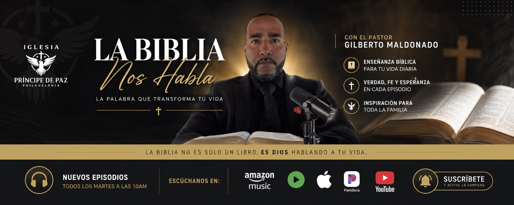

Predicaciones
Mensajes centrados en Cristo y su Palabra.
ENSEÑANZA BÍBLICA · VERDAD · FE · ESPERANZA
Predicaciones y enseñanzas bíblicas con el Pastor Gilberto Maldonado, desde la Iglesia Príncipe de Paz en Philadelphia.
“La Biblia no es solo un libro, es Dios hablando a tu vida.”
Mensajes centrados en Cristo y su Palabra.
Enseñanza bíblica para su vida diaria.
Llevando el evangelio más allá de nuestras fronteras.
Permítanos acompañarle en oración.
CONOZCA AL PASTOR
El Pastor Gilberto Maldonado sirve con pasión en la enseñanza fiel de las Escrituras, la predicación de Jesucristo, el fortalecimiento de la familia y la obra misionera.
Por medio de La Biblia Nos Habla, comparte mensajes claros y prácticos para ayudar a cada persona a crecer en su relación con Dios.
Conocer la Iglesia Príncipe de Paz →MENSAJES Y PODCAST

▶Enseñanza bíblica, verdad, fe y esperanza para toda la familia.
Suscribirse en YouTubeIGLESIA PRÍNCIPE DE PAZ
Le invitamos a reunirse con nosotros para adorar a Dios y recibir enseñanza de su Palabra.
La dirección completa y el mapa serán añadidos antes de publicar el sitio oficialmente.
MISIONES
Creemos en llevar el evangelio de Jesucristo con amor, servicio y fidelidad. Esta sección contará la obra misionera en Guatemala y otros lugares, con fotografías, testimonios y mensajes.
“Id por todo el mundo y predicad el evangelio a toda criatura.” Marcos 16:15
PETICIONES DE ORACIÓN
Comparta su petición. Antes de publicar el sitio, conectaremos este formulario a un correo seguro del ministerio.
Su información será tratada con respeto y confidencialidad.